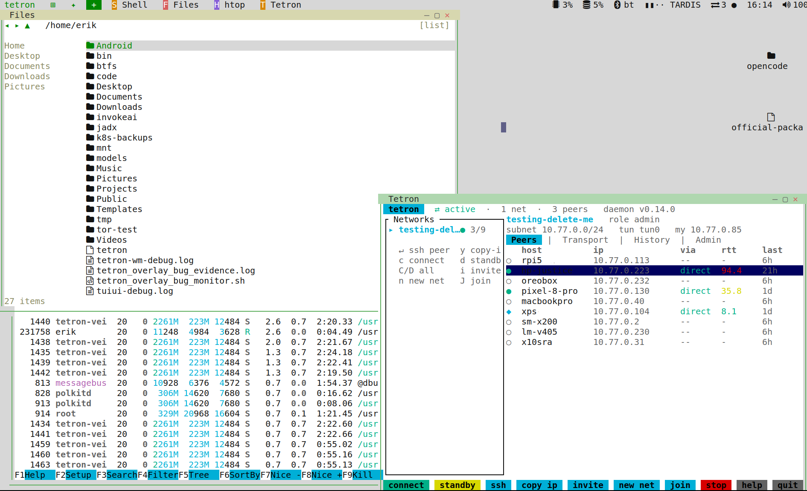
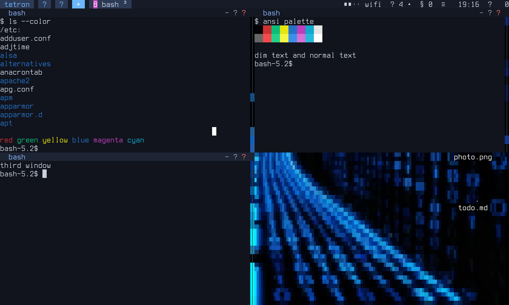
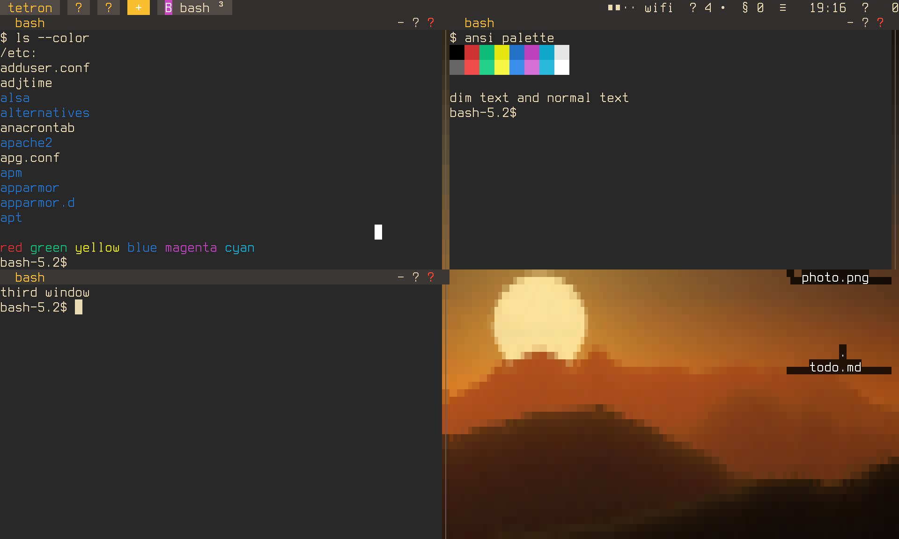
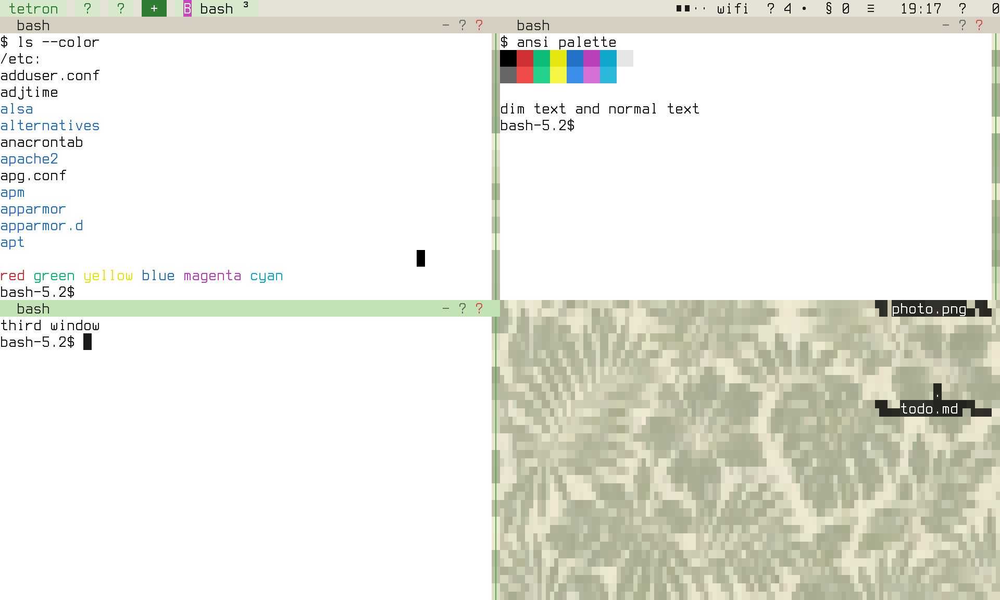
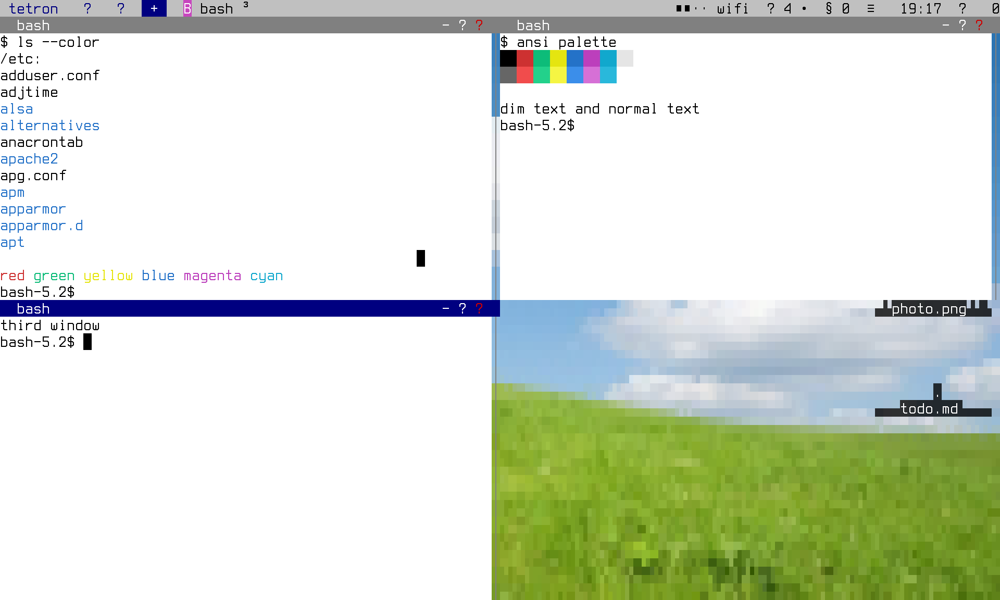

A TUI desktop. A graphical tmux.
Floating windows, a taskbar, a launcher, an app store and a mouse, all drawn as text inside the terminal you already have. Close the terminal, drop the ssh. Your apps keep running.
curl -fsSL https://raw.githubusercontent.com/ErikAllanKincaid/tetron-wm/main/install-tetron-wm-suite.sh | bashLinux (x86_64, aarch64) and macOS (Apple silicon, Intel). Prebuilt binary, no Rust needed. Then run tetron-wm.

Why
No compositor, no GPU, no toolkit. Just cells, so it runs wherever a terminal does.
Drag titlebars, resize edges, click the taskbar, right-click for menus. Files, desktop icons, viewers and a tray come built in.
Wallpapers, themes, a mouse cursor and floating windows in a shell. It feels like a toy and works like a tool.
Detach and reattach from any terminal or over ssh. Reloading or updating the UI does not close your apps.
An app store with 600+ curated TUIs. Search, install, launch. Missing toolchains are offered for you.
Four built-in themes plus nord, dracula, dawn and more. Write your own as a small file, wallpaper included.
Peers, link quality and an on/off toggle for your P2P mesh sit in the tray. Hidden when tetron is absent.
An optional panel running opencode or hermes that can drive the desktop through its own CLI.
On a bare Linux console it can be your whole desktop. The installer sets up autologin and autostart, and can undo it.
Compare
tmux splits a screen into tiles you drive with chords you have to memorize. tetron-wm gives you windows you can just grab.
$ tmux new -s work C-b % # split C-b " # split again C-b o # which pane? C-b z # zoom C-b d # detach # plugins, a conf file, a cheat sheet
$ tetron-wm click launcher -> Shell, btop, vim drag titlebar -> move drag edge -> resize Ctrl+Space ? -> every shortcut Ctrl+Space q -> detach # works on first run
| GUI desktop | tmux | tetron-wm | |
|---|---|---|---|
| Floating, overlapping windows | yes | tiles only | yes |
| Mouse: drag, resize, menus | yes | limited | yes |
| Survives closed terminal or dropped ssh | no | yes | yes |
| Needs X11, Wayland or a GPU | yes | no | no |
| Works on a headless server | no | yes | yes |
| App store, file manager, tray | yes | no | yes |
| Learning curve | low | steep | low, keys are optional |
Tour
Run tetron-wm. Click the button at the top left or press Ctrl+Space then l. The first entry is a Shell.
Run btop, a shell, vim and a file manager side by side. Drag, resize, minimize, maximize. The mouse reaches apps that use it.
Open the Store with Ctrl+Space then S. Search 600+ TUIs and install in a click. Ctrl+Space space searches every app.
Switch themes and wallpapers live from Settings, or write your own theme file.
Ctrl+Space then q detaches. Run tetron-wm again, from any terminal or over ssh, and everything is where you left it.



the desktop
tetron mesh VPN
tetron-wm has first-class support for tetron, a peer-to-peer mesh VPN with no accounts, no port forwarding and no exposed ports. Its status lives in the tray.
Themes
A theme is a small file: colors, glyph style and an optional wallpaper. Four ship built in.

curl -fsSL https://raw.githubusercontent.com/ErikAllanKincaid/tetron-wm/main/install-tetron-wm-suite.sh | bash